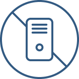

About ALIS株式会社ALISの会社、
チームについてご紹介
TEAM
ALISは長年企業システムに携わってき経験を持つエンジニアが多数在籍する、先進技術・特にブロックチェーンに強みを持つ企業です。豊富な経験・実績から御社のデジタルトランスフォーメーションを一気通貫で支援します。自社プロダクトではブロックチェーンはもちろん、バックエンドはフルサーバレス、フロントエンドにはVue.jsやNuxt.js等の最新技術・アーキテクチャを採用。低いレイテンシはもちろん情報セキュリティ(JIS Q 27002)における完全性・機密性を堅牢に担保し、可用性も100%を誇ります(2018-2020年運用実績)。
MASAHIRO YASUFOUNDER / CEO
京都大学において核融合の研究を専攻し、ヘリカル型プラズマのアルヴェン固有モード励起のパターンをFortran言語で解析。2011年株式会社リクルート（Indeedの親会社）入社、ビジネスSNS・名刺管理アプリ・リファラルツール等の事業戦略、新規事業開発、開発ディレクションを行う。また、機械学習や自然言語解析等にも積極的に取り組み、2016年リクルートグループの企画に贈られる最高賞GROWTH FORUMを受賞。その後日本マイクロソフトとの共同プロジェクトのプロジェクトリーダーも兼ねる。ブロックチェーン技術に出会い、AI・VRよりも世の中の進化スピードを早められる手段だと確信し、ALISを立ち上げる。
TAKASHI MIZUSAWACO-FOUNDER / CMO
立命館大学在学中にスタートアップ企業を立ち上げた後、ベネッセコーポレーションに入社。わずか1年目にして全社組織のマーケティング部門MVPを受賞し、学生向けSNSや学習用タブレットの新規事業を経験。その後、「学ぶ」と「働く」の接続を目的にリクルートキャリアへ転職。MOOCやリファラル採用ツールの事業開発に従事する中で、コミュニティ共創型の事業開発に没頭する。マーケティングの重要な役割を「価値の創造源」に位置づけ、一人ひとりの持ち味が発揮されやすいエコシステムの実現を目指す。
SOTA ISHIICO-FOUNDER / CTO
業界歴13年超のエンジニア。新技術や未経験の業務を好み、役割や技術を問わず意識的にゼネラリストを指向。 暗号通貨、ブロックチェーンの技術動向は2013年より追っておりWEBの「次」を作る中核技術であると確信している。その流れを推し進めることに強い関心があり、安・水澤と共にALISをスタートした。
PRODUCT
- BlockchainALISの基幹技術
国内有数の運用実績を誇り
継続的な研究開発も行う - Serverless可用性100%の運用実績
堅牢性と費用対効果に優れ
弊社DX事業の基盤を成す - FrontendVue.js & Nuxt.js
公開リポジトリで国内屈指
開発効率と保守性に優れる

| 会社名 | 株式会社 ALIS |
|---|---|
| 代表者 | 安 昌浩 |
| 設 立 | 2017年05月 |
| 所在地 | 東京都渋谷区神南一丁目20番7号 川原ビル６階 |
Contact
ご質問等があれば、以下のフォームより
お問い合わせください。